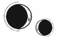

CAPÍTULO 66
Mayus 1789
La mente de Helena se abrió de par en par al recobrar el sentido.
Se incorporó bruscamente, con la cabeza a punto de estallar de dolor. Lo único en lo que podía pensar era en escapar, en correr. La necesidad de huir la estaba consumiendo. Allá donde mirara, no veía más que oscuridad.
Intentó moverse, pero su cuerpo no respondió. Cada movimiento brusco desató una oleada de dolor que recorrió sus muñecas, sus manos y sus brazos al intentar levantarse. Las costillas le constreñían los pulmones y le impedían respirar con normalidad.
Ya no estaba en el tanque, pero todo seguía oscuro y apenas podía moverse.
Una mano le tocó el hombro y Helena dejó escapar un grito ahogado mientras levantaba la vista. Era Kaine. Estaba inclinado sobre ella; su cabello claro y sus resplandecientes ojos plateados eran lo único visible en medio de la negrura. Le temblaban los dedos.
Helena lo contempló, atónita.
Estaba distinto, más mayor. Aunque no solo era por el físico, sino también porque en sus ojos había algo que le hacía pensar que habían pasado décadas desde la última vez que se vieron.
Se estiró hacia él con un sollozo.
—Estás vivo.
Kaine se apartó con una expresión de desconsuelo extendiéndose por su rostro. Helena no comprendió por qué había reaccionado así hasta que la voz temerosa de Grace emergió de las profundidades de su mente.
«Lila Bayard fue la primera a la que trajo de vuelta».
Sus recuerdos resurgieron de golpe: los grilletes, la transferencia, su encierro en Puntaférreo. El Sumo Inquisidor había matado a todo el mundo.
Kaine era el Sumo Inquisidor.
A Helena se le heló la sangre; retiró la mano y se apartó de él, ignorando el intenso dolor que estalló en sus muñecas. Tenía algo enredado en torno al codo y se lo arrancó al retroceder con torpeza. Los brazos y las piernas le temblaban bajo el peso de su propio cuerpo. Estuvo a punto de caerse del borde de la cama, pero se dejó caer hasta el suelo y se quedó arrodillada, contemplando por encima del colchón la habitación oscura de esa casa igual de oscura en la que permanecía encerrada.
Kaine seguía vivo.
Pero eso significaba que no había ido a buscarla, que ella lo había estado esperando en vano.
Aquella disonancia mental le daba ganas de gritar. Helena estaba arrodillada sobre las ruinas de su vida mientras el pasado y el presente colisionaban.
No podía ser él. Ferron le había hecho daño, la había violado y había asesinado a todos.
Kaine jamás sería capaz de algo así.
Le había prometido que siempre…
Una punzada le atravesó el cerebro. La vista se le nubló y un gemido angustiado escapó de entre sus labios. Tuvo que cubrirse la cara con las manos a medida que el dolor crecía y le perforaba la mente hasta volverse tan insoportable que estuvo a punto de perder el conocimiento.
Sentía que le ardía la cabeza, como si le hubieran partido el cráneo, y la presión le estaba derritiendo el cerebro. Gritó para intentar librarse del dolor y no paró hasta quedarse sin aliento. Cuando volvió a levantar la vista, estaba sola.
A lo mejor Kaine nunca estuvo allí con ella. A lo mejor su rostro no había sido más que un producto de su imaginación.
A lo mejor todo fue un sueño. Kaine estaba muerto y ella seguía pudriéndose en aquel tanque de suspensión, olvidada en la oscuridad, donde nadie la encontraría jamás.
Se dejó caer y una mano la agarró del hombro antes de que tocara el suelo. Entonces descubrió con un sobresalto que él volvía a estar a su lado. Cuando sus miradas se encontraron, la expresión de él se desmoronó.
—Estás empezando a recordar, ¿no es así?
Helena se las arregló para asentir y le tocó la muñeca para notar la piel y los huesos bajo los dedos. Era real.
Estaba todavía vivo. Se había convencido de que todo el mundo había muerto, pero Kaine había sobrevivido y, de algún modo, eso hacía que la situación fuera todavía peor.
Giró el rostro y lo escondió en el edredón para ahogar el renovado impulso de ponerse a gritar. Un coro de contradicciones y miedos tronó en su cabeza mientras trataba de poner en orden sus pensamientos. Nada parecía real. Todo era mentira.
Entonces recobró la lucidez y lo agarró más fuerte de la muñeca, tanto que le clavó las uñas en la piel.
—La obsidiana… Mandl y el resto… ¿Fue todo…? ¿Ha sido todo cosa tuya…?
—… Así es.
A Helena le temblaba la barbilla y le ardían los ojos.
—¿Ha sido así… siempre?
—Sí.
Los combatientes de la Resistencia y los miembros de la Llama Eterna que había creído escondidos en algún lado se esfumaron de su mente y quedaron reemplazados por Kaine. Su captor y su mayor pesadilla.
Helena asintió y desvió la mirada, incapaz de reconciliar el alivio y el miedo que sentía al mismo tiempo.
Estaba vivo. Había conseguido salvarlo. Aquello era lo que siempre había querido, pero…
No de esa manera.
—¿Por qué mataste a Lila? —Se le rompió la voz.
—No la he matado. Está viva.
Helena lo miró sin comprender. El dolor de cabeza hacía que Kaine pareciera resplandecer.
—Grace vio su cadáver. Todo el mundo en el Reducto lo vio. Mandl la tenía montando guardia.
—Lila estaba embarazada y era la única superviviente de la familia Bayard. No iban a dejar de buscarla hasta que encontraran su cuerpo, así que les procuré uno. Fue idea tuya.
Helena no se acordaba de eso. Después de tantas mentiras, no se veía capaz de creer nada de lo que le contara.
—Ha tenido un niño. Es excepcionalmente ruidoso y se llama como su abuelo. Lila ha intentado matarme dos veces como mínimo todas las veces que he ido a visitarlos.
Sonaba como algo típico de ella. Helena levantó la cabeza. El deseo irrefrenable de creer en él le había formado un doloroso nudo en la garganta.
—¿Dónde está ahora?
Kaine negó con la cabeza.
—No se encuentra en Paladia, pero la verás pronto. ¿Recuerdas que le prometiste a Holdfast que los protegerías? Te han estado esperando.
El corazón le dio un vuelco, pero entonces se acordó de todo lo que le había contado. Se encogió sobre sí misma.
—No te creo —dijo, incapaz de controlar lo mucho que le temblaba la barbilla.
—Lo sé.
—No lo entiendo. —Negó con la cabeza—. No recuerdo nada… salvo a ti.
Quiso tranquilizarse diciéndose que Kaine era real, pero eso era imposible. La persona que habitaba sus recuerdos no podía existir, porque Kaine Ferron había matado a todo el mundo. Había erradicado a los miembros de la Llama Eterna y les había dado caza a todos aquellos combatientes de la Resistencia que habían osado huir. Tenía las manos manchadas de sangre.
Él tragó saliva.
—¿Qué… recuerdas sobre mí?
Le resultaba una persona familiar y a la vez completamente distinto, como si hubiera sido creado a la imagen y semejanza del Kaine que ella había conocido pero sin ser él.
—E-espiabas para la Llama Eterna —apuntó en apenas un susurro—. Solías llamarme para que me reuniera contigo y te curara… y… y…
Se le trabó la lengua y un dolor carmesí estalló en el interior de su cabeza. El mundo se tambaleó a su alrededor.
Parpadeó deprisa mientras intentaba pensar. Había estado intentando decir algo… algo… Notaba la lengua pastosa. Cuando intentó abrir la boca para hablar, la mandíbula le dio una sacudida y le chasqueó repetidamente.
Luego, las extremidades y los dedos se le curvaron con rigidez hacia dentro, como si fuera una araña muerta, y Kaine la agarró justo a tiempo de impedir que cayera de bruces al suelo.
Helena no podía hablar.
La mandíbula le temblaba sin control y los pulmones se le estremecieron en cada intento de respirar. Notó que la cabeza también empezaba a sacudírsele contra el pecho de Kaine, que le apoyó una mano en la sien para inmovilizarla. El corazón de Helena latía a toda velocidad, aterrorizado.
—Tranquila —le dijo Kaine—. Date un minuto para que se te pase.
Lo sintió respirar hondo mientras ella seguía convulsionando entre sus brazos.
—Le hiciste un buen trabajo a ese cerebro tuyo —añadió con voz calmada—. Las barreras transmutacionales que erigiste están empezando a caer, pero pronto te encontrarás mejor.
A Helena se le contrajo la garganta y todos y cada uno de sus tendones y músculos parecieron replegarse y amenazaron con romperse. Kaine le estaba diciendo que pronto se encontraría mejor, pero ese momento no llegaba.
—Aguanta un poco más.
Cuando los temblores por fin cesaron, su cuerpo se relajó y su mente quedó sumida en una bruma inconexa. Kaine la levantó en volandas. Helena estaba tan delgada que notó los huesos de sus articulaciones al dejarla de nuevo sobre la cama y cubrirla con el edredón. Helena quiso protestar, pero tenía la mandíbula agarrotada y su boca se negaba a moverse con normalidad.
Había un motivo por el que Kaine no debería tocarla. Ella no quería que lo hiciera, pero ya no recordaba por qué. Sin embargo, le aterrorizaba verlo marchar, que desapareciera y la dejara sola en la oscuridad.
Kaine rodeó la cama en silencio, encendió una vela y colocó una bandeja con frasquitos en la mesita de noche. La luz tenue de la vela brillaba entre ellos.
—Has pasado una semana inconsciente —le explicó sin levantar la mirada, como si notara que Helena lo estaba observando—. Sufriste… —se interrumpió y apretó los labios con fuerza mientras tomaba aire—. Sufriste un ataque y no te despertaste. S-según parece, has estado manteniendo esas barreras mentales en pie sin darte cuenta todo este tiempo. Cuando te quedaste embarazada…, el Estrago te ganó la partida. Consumiste toda tu energía.
¿Embarazada? Había olvidado ese detalle. Un jadeo ronco y aterrorizado la sacudió cuando recordó lo que había pasado. Morrough quería un bebé. Helena se había quedado allí tumbada y había dejado que todo sucediera sin…
—¿Por qué…? —fue lo único que pudo decir.
Kaine vaciló y su mirada, que hasta ese momento había permanecido fija en los frasquitos de la bandeja, se dirigió hasta ella. Dejó lo que estaba haciendo y se inclinó hacia delante.
—Escúchame bien. Sé que quieres recordarlo todo ya, pero tu mente necesita estabilizarse. Está pendiendo de un hilo ahora mismo —le dijo con mirada suplicante—. Con el tiempo, todo cobrará sentido.
Kaine no recurrió a la resonancia mientras hablaba. Solo habría conseguido empeorar la situación. Al estar cerca de él, el cuerpo de Helena se calmaba de manera instintiva pese a recordar con todo lujo de detalles las veces en que le había hecho daño mientras había permanecido prisionera en aquella jaula helada que tenía por casa.
Helena se estremeció.
—Aguanta un poco más. Todo terminará pronto.
Pero ella tenía un millar de preguntas. «¿Qué ha pasado? ¿Por qué no viniste a por mí? ¿Por qué me has hecho daño? ¿Por qué me has violado?».
«¿Por qué te convertiste en el Sumo Inquisidor?».
—¿Por qué… —se le quebró la voz— por qué has matado a todas esas personas?
La pregunta pareció sorprenderlo, como si hubiera esperado antes cualquiera de las otras que a Helena se le habían pasado por la cabeza.
—Estaba intentando encontrarte.
A Helena le dio un vuelco el corazón, presa de una reacción visceral tan horrorizada como aliviada.
—¿Fuiste a buscarme? —preguntó con voz rota.
Un destello angustiado surcó la mirada de Kaine.
—Pues claro. Te busqué por todas partes. ¿Creías que te había abandonado?
Intentó recordar qué era lo que había pensado.
—Se suponía que iban a interrogarme. Como aparecías en tantos de mis recuerdos, creí que lo mejor sería olvidar para que no pudieran encontrarte. Sin embargo, nadie vino a por mí. Pensé que todos habían muerto.
Kaine la miró como si acabara de destriparlo, dio un paso atrás y se giró.
—Te busqué sin descanso. Primero fui al edificio que hiciste estallar, luego a la Central y al Reducto, y no había ni rastro de ti. Había un documento que mencionaba el traslado de una sospechosa capturada cerca del puerto Oeste, pero tus heridas eran demasiado graves y te pusieron en la lista de los prisioneros condenados a muerte. Cuando no logré encontrarte entre los cadáveres, revisé cada celda y cada documento que pude localizar, pero habías desaparecido. Por eso me ofrecí voluntario para darles caza a los desaparecidos. Pensé que acabaría encontrando alguna pista que me llevara hasta ti. —Apretó los dientes—. Tuve que entregarles a todos los miembros de la Resistencia que encontré. De lo contrario, le habrían asignado la tarea a otra persona.
Tenía la vista clavada al otro lado de la estancia y se negaba a cruzar la mirada de ella mientras hablaba.
—Fui a Hevgoss unas cuantas veces. Llegué a pensar que tal vez hubieras acabado allí. Estuve incluso en la nave donde te tenían prisionera. Revisé todos los documentos que se guardaban por si encontraba alguna descripción que coincidiera contigo, pero no se me ocurrió abrir los tanques, así que…
Le temblaba el mentón y, en vez de seguir hablando, se limitó a colocar la bandeja.
—¿Por qué no me diste por muerta? —le preguntó.
Kaine dejó las manos quietas.
—Tenía que saber qué te había pasado. —Inspiró hondo—. Esta habitación es segura, pero Morrough tiene ojos por toda la casa. A veces nos vigila desde el pasillo. Ahora que estás embarazada, no creo que pida verte de nuevo, pero, mientras fuera un riesgo, siempre existía la posibilidad de que viera algo que sucediera aquí.
Helena tardó un poco en entender lo que estaba tratando de decirle. Kaine había pasado meses interpretando un papel para Morrough, consciente de que vería a través de los ojos de Helena todo lo que pasara entre ellos.
Entonces ¿qué había sido real? ¿Todo? ¿Nada?
Una ola de agotamiento la embistió. Se sentía como si sus recuerdos hubieran sufrido una sacudida y hubiesen quedado mezclados, revueltos y desorganizados. Ni siquiera se sentía capaz de pensar con claridad.
Quería dormir, sumergirse de nuevo en el abismo, pero tenía miedo de que los recuerdos volvieran a escapársele de entre los dedos. De que Kaine se desvaneciera y se despertara junto al Ferron frío y cruel de nuevo.
Por mucho que lo intentara, no lograba reconciliarlos. Para ella, eran dos personas distintas.
A Kaine lo conocía bien.
Pero Ferron era un monstruo. El miedo y el odio que sentía por él nacían de lo más profundo de su ser. Esa horrible silla de cadáveres, su pila de víctimas. Jamás lograría olvidarlo.
Le dolía la cabeza. El cráneo ejercía tal presión sobre sus ojos que amenazaba con expulsarlos de sus cuencas. Los cerró con fuerza justo cuando sintió que el colchón se hundía a su lado. Kaine la agarró del brazo con suavidad y ella notó cómo la pinchaba con la aguja de una vía intravenosa.
—Intenta no quitártela más —le pidió mientras trabajaba—. Para haber pasado tantos años trabajando en un hospital, eres una paciente terrible.
Le dejó el brazo estirado sobre la cama y volvió a revisar los frasquitos de la bandeja hasta dar con el que buscaba. Luego vertió su contenido por los tubos de la vía, de manera que se mezclara con el suero que le subía por el brazo.
—Deberías descansar. Ya hablaremos mañana.
—¿Y si vuelvo a olvidarlo todo? —preguntó con un hilo de voz, a punto de echarse a temblar de miedo. Kaine no respondió—. ¿Volverás… volverás a comportarte como antes si te olvido?
—Ya casi ha terminado todo —la tranquilizó, aunque no respondió a su pregunta.
Helena notó el medicamento corriéndole por las venas y envolviéndola como un manto pesado. Luchó por mantener los ojos abiertos, por seguir despierta y recordar.
—¿Y luego qué?
La habitación pareció sumirse en la oscuridad.
—Cuidarás de Lila, tal y como prometiste.
Cuando Helena volvió a abrir los ojos, una rendija de luz suave se colaba entre las cortinas, permitiéndole distinguir los detalles de la habitación, de su prisión. Kaine ya no estaba.
A los pocos minutos de despertar, una necrómata abrió la puerta. Helena se la quedó mirando.
—No es la primera vez que te veo… —le dijo cuando dejó una bandeja con un cuenco de sopa en la mesa—. Ya había estado aquí antes.
¿Por qué?
—Shhh…
La necrómata dejó escapar aquel suave siseo entre dientes y negó con la cabeza como para advertirle de que debía guardar silencio. Luego, metió una mano en el bolsillo, sacó un pedacito doblado de papel y se lo tendió.
En él solo había una palabra escrita con letras claras: «Descansa».
La nota se le escapó de entre los dedos, pero la necrómata la atrapó al vuelo y se la guardó en el bolsillo de nuevo antes de ofrecerle la sopa.
Helena se obligó a tomar unas cuantas cucharadas, pero su cuerpo rechazaba la comida y tenía ganas de vomitar. Mientras tanto, se esforzó por no pensar, por dejar de intentar recuperar la memoria, pero era tan inútil como tratar de ignorar a Lumitia en plena sublimación.
Kaine había sabido quién era desde el principio, desde que ella puso un pie en aquella casa.
El proceso de transferencia… había sido idea de la propia Helena. Era lo que había querido utilizar para curar a Titus Bayard.
Y Shiseo…
Se miró las muñecas con renovado pavor.
La transferencia, los grilletes… Era a Shiseo a quien le había hablado de ellos, no a Kaine. La transferencia era lo que había llevado a Morrough a instaurar el programa de repoblación.
Sufrió una arcada y vomitó toda la sopa que había tomado en el suelo, junto a la cama.
Intentó no pensar en ello. Trató de recordar cómo era antes y reconciliarse con la versión de sí misma que había olvidado. Al borrarse la memoria, había perdido una parte de su personalidad; había olvidado lo enfadada que estaba, lo despiadada que podía llegar a ser ella también.
Esa era la persona de la que Kaine se había enamorado, la persona por la que había hecho tantas cosas horribles. Pero esa Helena ya no existía, de ella no quedaba más que una sombra.
Cuando Kaine regresó, ya había caído la noche.
Pese a que el corazón le dio un vuelco de alivio, el miedo se adueñó de ella al verlo en la oscuridad. Era evidente que solo estaba de paso, pues se quedó observándola con frialdad desde la puerta, sin cruzar la estancia.
Helena no sabía qué quería que hiciera. Habría preferido que Kaine no hubiera ido a verla, pero la alternativa era mucho peor. En su ausencia, se veía obligada a lidiar con la posibilidad de que muriera y no regresara jamás. Entonces no volvería a verlo.
—¿Estás enfadado conmigo por algo? —le preguntó.
Kaine, que había permanecido en silencio, apretó los labios en una línea fina, entró en la habitación y cerró la puerta.
—No.
Se acercó a la ventana y descorrió las cortinas lo suficiente como para dejar entrar una suave rendija de luz plateada. Iba vestido de uniforme.
Helena lo estudió, intentando averiguar qué era lo que había cambiado tanto en él.
—Sí que estás enfadado. Siento que lo estás, pero no recuerdo por qué.
—Da igual —dijo sin mirarla—. Ya no importa.
—Pero, si lo que pasó no importa, ¿por qué has estado buscándome?
—¿Recuerdas cómo te capturaron? —preguntó apretando los dientes.
Helena asintió.
—Volé por los aires el laboratorio del puerto Oeste.
Kaine asintió brevemente, sin apartar la mirada de la ventana.
—¿Y recuerdas por qué lo hiciste?
Helena frunció el ceño. Tenía la sensación de que la respuesta era evidente, pero se le escapaba.
—No te fuerces si no consigues acordarte —le dijo Kaine lanzándole una mirada rápida al ver que no respondía.
—Fue por ti, ¿no?
Por algún motivo, pese a no recordar nada más que el fuego, el dolor de oídos y su intento de escapar, estaba segura de estar en lo cierto.
Kaine volvió a desviar la vista, pero asintió.
Helena no alcanzaba a entender por qué se enfadaría por algo así. Cerró los ojos. Ahora que estaba allí con ella, el agotamiento se apoderó de su cuerpo, como si hubiera estado esperando a verlo para descansar.
—Cuando dormías, solía prometerte que cuidaría de ti.
—No —respondió él con brusquedad—. Era al revés. Era yo quien te lo decía.
—Pero yo te respondía lo mismo —apuntó ella abriendo los ojos—. Supongo que nunca llegaste a oírme.
Una expresión conmocionada se adueñó de Kaine antes de que volviera a apartar la mirada y cerrara las cortinas. Entonces su rostro desapareció entre las sombras.
—¿Cuál es el plan? —le preguntó Helena a la oscuridad—. El otro día dijiste que ya casi había acabado todo. ¿Qué querías decir?
Los ojos de él parecieron resplandecer.
—Estamos esperando a que Lumitia entre en plena latencia. Te llevaré al Sur, lo más lejos posible de aquí. Pasarás más desapercibida.
—¿Lila está allí? ¿En el Sur?
—Sí, te está esperando en el continente, cerca de la costa. La dejé a medio camino mientras intentábamos encontrarte.
—¿Por qué hablas en plural?
Una chispa de esperanza floreció en su pecho al pensar que tal vez sí que había supervivientes.
—Shiseo me ha estado ayudando.
Helena retrocedió instintivamente al oír su nombre.
—Se entregó él mismo. —Aunque no podía verlo, a juzgar por el volumen de su voz, Kaine se había acercado a ella—. Enseñó los documentos y el sello que lo identificaban como un miembro de la familia imperial y se ofreció a investigar para los inmarcesibles. Diseñó esos grilletes con la esperanza de que, si alguna vez aparecías, fuera él el encargado de ponértelos.
—Bueno, está claro que la jugada le salió bien —dijo Helena con tirantez—. Todo esto es culpa suya. Si no les hubiera contado lo de la transferencia…
—Morrough te habría diseccionado el cerebro en cuanto te encontraron si Shiseo no hubiera intervenido —la interrumpió Kaine—. Además, era imposible adivinar para qué utilizaría Morrough el procedimiento.
Helena se quedó callada.
—Fue la única estrategia que se le ocurrió para conseguirme acceso a ti y ayudarnos a ganar el tiempo necesario para escapar. Será él quien te lleve hasta Lila.
—¿Y qué pasa con Paladia?
Kaine guardó silencio unos instantes.
—Morrough se está debilitando. Intentó utilizar el cuerpo de Holdfast como recambio, pero no fue suficiente. Ni siquiera introducirse sus huesos en el cuerpo le funcionó. Ha perdido a tantos inmarcesibles que ya no puede moverse ni respirar sin esa monstruosidad que ha creado. Por eso está tan desesperado por conseguir un animante. Cree que le ayudará a empezar de cero.
Los huesos de Luc. Había utilizado los huesos de Luc.
—La clave está en atacar en el momento preciso —siguió diciendo Kaine—. Los actos de Morrough y la gran extensión de la matanza han empezado a tener impacto en el continente. Los países vecinos intervendrán pronto y se rumorea que están formando una alianza. Incluso Hevgoss ha accedido a cooperar. Paladia es una fuente esencial de lumitio y una potencia industrial que no podrán reemplazar así como así con tantos alquimistas muertos. Aunque no quieran verse envueltos en un conflicto civil, harán lo que haga falta para defender sus intereses. Actuarán en cuanto estén seguros de que Morrough es lo bastante débil.
Su tono de voz destilaba una certeza casi absoluta, como si todo estuviera organizado ya al detalle. Aquello despertó el interés de Helena, que trató de recordar lo que había leído en los periódicos.
—¿Y tú cómo…?
—No te preocupes por los detalles —la interrumpió—. Para cuando llegue el momento, tú ya estarás muy lejos de aquí. Si quieres ayudar, asegúrate de comer y recobrar fuerzas para el viaje.
Se marchó sin decir nada más y no regresó hasta varios días después.
Que Kaine ni siquiera se dejara caer por su habitación la puso, tarde tras tarde, cada vez más nerviosa. No pudo evitar hacer el esfuerzo de recordar, de atar cabos y entender por qué estaba enfadado y por qué no volvía con ella. Su memoria regresaba a ráfagas, le teñía la vista de rojo, desordenaba sus pensamientos y la sepultaba bajo una avalancha de estallidos inconexos de emoción y fragmentos de conversaciones.
Estuvo todo el día sufriendo ataques como ese, así que Davies añadió el contenido de varios frasquitos al gotero para dejarla sumida en un estupor que le impedía pensar.
Ya había anochecido cuando el colchón se hundió a su lado y una mano fría le apartó los mechones que tenía pegados a la frente para colocárselos detrás de la oreja. Kaine le cogió la mano. Entrelazó sus dedos largos con los de ella y le acarició los nudillos con el pulgar, pero se detuvo al llegar a su dedo anular y le dio vueltas a algo despacio.
El anillo.
Helena se había olvidado de él.
Cuando los ataques cesaron, Kaine volvió a retirarse, aunque no se marchó. Al principio, Helena pensó que eran imaginaciones suyas, pero era evidente que él estaba intentando poner distancia entre ellos.
Se quedó de pie, con las manos entrelazadas a la espalda, sin mirarla, y respondió a todas sus preguntas en pocas palabras. Ella casi nunca sabía qué decir; todo le resultaba demasiado trivial o abrumador como para expresarlo en voz alta. Ni siquiera sabía por dónde empezar.
«Aguanta —se había dicho una y otra vez estando dentro del tanque—. No te derrumbes». Pensaba que lo había conseguido, pero ahora entendía que lo que quedaba de ella no eran más que retazos.
Permaneció en la cama mirando a Kaine, que seguía con la vista clavada en la ventana. Era de noche, así que no había nada que ver. Lo que no quería era mirarla a ella. Helena sabía que se marcharía en cualquier momento si no decía algo.
—¿Cómo has… estado estos días? —preguntó en un arrebato de desesperación, aunque enseguida se arrepintió de haber dicho semejante tontería.
—Bien.
Helena bajó la vista al regazo.
—Te has casado.
Kaine se puso rígido ante el comentario y respiró hondo.
—Sí, con Aurelia Ingram.
Helena asintió. No entendía por qué le importaba tanto, dadas las circunstancias. Nunca se había planteado la posibilidad de casarse con él. Sin embargo, su mente se negaba a dejar de darle vueltas a ese detalle. Ahora tenía una esposa y, en consecuencia, ella sería…
No sabía lo que sería. Ni lo que había sido.
—Fueron órdenes de Morrough —explicó él, aunque Helena no había dicho nada más—. El Concejo de Gremios quería celebrar un evento de gran repercusión para demostrar que todo había vuelto a la normalidad. No tuve otra opción.
Helena se limitó a asentir, en silencio.
—Yo… —Kaine se volvió para mirarla, pero las palabras murieron en sus labios.
El espacio que los separaba era como un abismo plagado de los pecados que habían cometido contra el otro, pero Helena notaba la rabia de Kaine incluso desde la distancia.
Daba igual lo que dijera. Sabía que estaba enfadado con ella.
—¿Ya puedes viajar? —le preguntó—. Has dicho que has ido a Hevgoss muchas veces.
—Así es.
Helena retorció el borde de la sábana de lino entre los dedos.
—Entonces, cuando todo esto haya acabado, ¿vendrás…? ¿Vendrás al Sur con nosotras?
—Me temo que Lila me sigue odiando tanto como el primer día.
Ella se quedó callada, a la espera de una respuesta de verdad. «Se suponía que íbamos a huir juntos. Me lo prometiste».
Kaine rehuyó su mirada y volvió a fijar la vista en el patio.
—Con un poco de suerte, no me quedaré mucho tiempo en Paladia después de que os vayáis.
—¿Vendrás entonces con nosotras? —insistió con tono esperanzado.
Dentro de los asfixiantes confines de Puntaférreo, le resultaba imposible imaginar un escenario en que se reconciliaran. Sin embargo, si se marchaban lejos de allí, tal vez pudieran empezar de cero. Al fin y al cabo, habían vuelto a encontrarse. Con el tiempo, tal vez podrían intentarlo de nuevo.
Los ojos de Kaine brillaron por un momento.
—Si eso es lo que quieres —susurró tras esbozar el fantasma fugaz de una sonrisa.
Pero no sonó sincero.